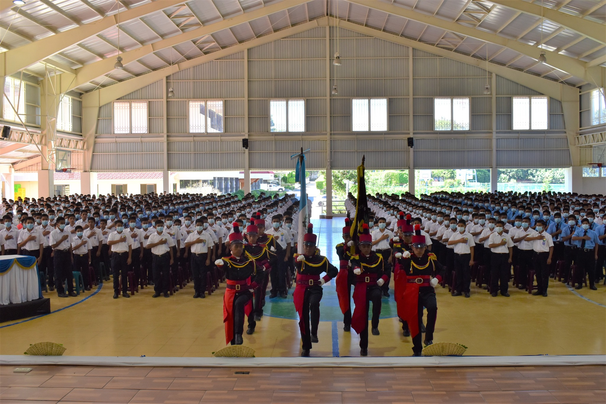
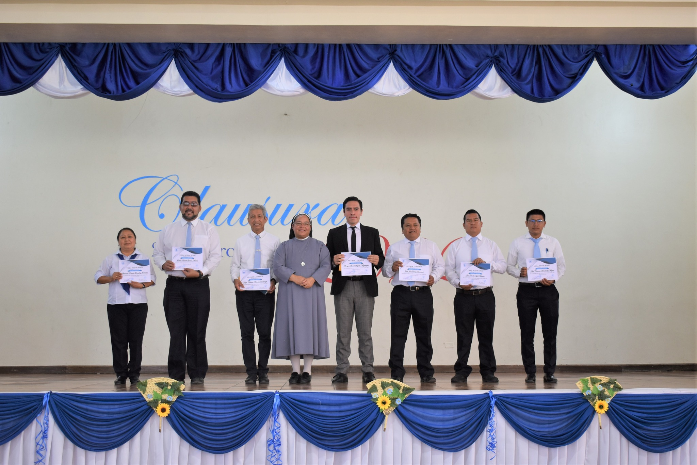
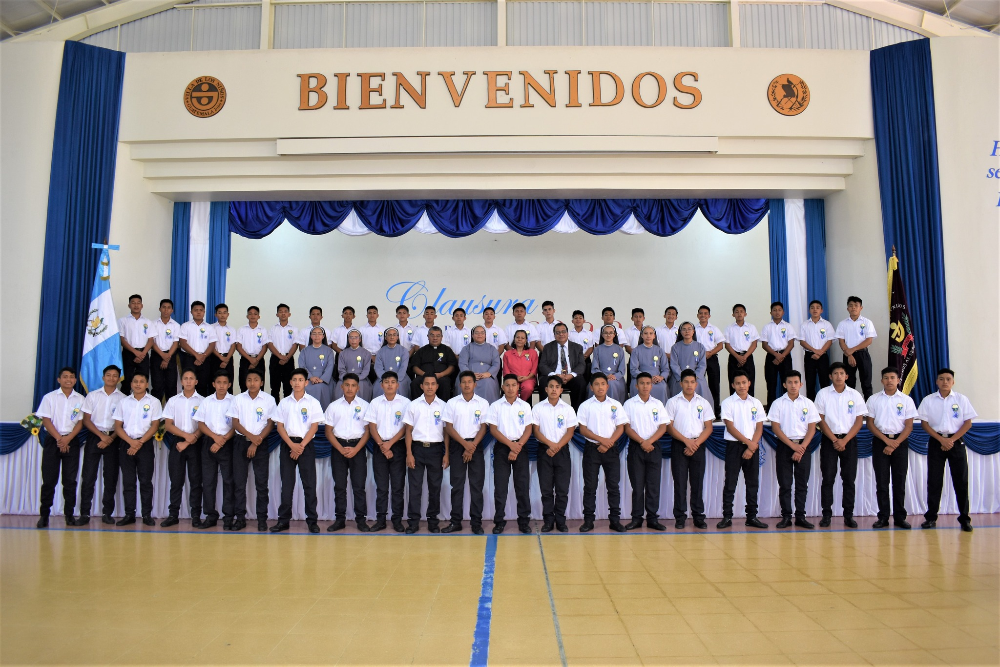

Galería




Villa de los Niños es una institución que ayuda a los mas necesitados de toda la republica de Guatemala. Da estudios gratuitos a los que desean superarse.
La Villa de los Niños de las Hermanas de Maria, procura que los graduados en su vida diaria y para seguir su llamado, se conviertan en los nuevos discipulos extendido en el trabajo de la dedicación y al mismo tiempo enseñar y dar ejemplo de las virtudes marianas, como la sencillez, caridad, gratitud y alegría.
Inspiradas por su patrona la virgen de los pobres , la escuela Villa de los Niños, de las Hermanas de María, dirigen su energía y sus recursos a los jóvenes más pobres de los pobres del País, dando una educación secundaria y Bachillerato, con cursos técnicos intensivos de alta calidad, moldeándolos a ser ciudadanos comprometidos a servir a la Nación, amar al prójimo y propagar los valores morales y espirituales basados en el evangelio.
Las Hermanas de María en Filipinas, Corea, México, Guatemala, Brasil y Honduras, proporcionan alimentos, cuidado y la educación de los niños que, por causas ajenas a su propia cuenta, son víctimas de circunstancias que tienen consecuencias de largo alcance para su educación y condiciones de vida . Algunos ejemplos de estas circunstancias podría ser la pérdida de uno o ambos de sus padres, la pobreza extrema, enfermedades y el hambre. Los niños tienen edades desde recién nacidos hasta los veinte años. En las Hermanas de María, los niños cuentan con un acreditado programa plenamente interno de educación desde el estado maternal hasta la escuela secundaria y bachillerato. Los niños de secundaria reciben también formación profesional. Como resultado de esta capacitación, los graduados han tenido mucho éxito en la obtención de puestos de trabajo después de completar su educación. Hasta el momento, las obras del Mundo para Niños ha ayudado a más de 45.000 niños a liberarse de una vida de pobreza. Durante su estancia en las instituciones de las Hermanas de María, a todos los niños se les apoya con comida gratis, alojamiento, ropa, todo el cuidado médico y dental que necesitan. Para que puedan convertirse en adultos independientes y liberarse de todas las cicatrices físicas y emocionales de su vida anterior de vivir en la pobreza, los niños son animados a participar en actividades deportivas, artísticas y actividades destinadas a promover la higiene. Villa de los Niños Escuela-hogar de Hermanas de María funciona en Guatemala desde 1998. Villa de los Niños funciona como escuela-hogar para huérfanos, niños abandonados e hijos de familias muy pobres. Allí se les proporciona alimentación, vestimenta, alojamiento, y una educación básica y técnica de excelente calidad, en forma gratuita. Se sostiene a través de donaciones. La congregación religiosa Hermanas de María fue fundada por monseñor Aloysius Schwartz de nacionalidad norteamericana, en 1964. A los niños y jóvenes se les enseña el valor del trabajo, autodisciplina, honradez y valores morales que, después de graduados, les conducirán a un mejor futuro. Villa de los Niños es la primera de su tipo en Centroamérica, y la octava en el mundo. Actualmente se atiende a 700 niños pobres, provenientes de las áreas menos favorecidas del país. Allí reciben educación de nivel básico y diversificado, con orientación técnica ocupacional en las áreas de electricidad, soldadura, carpintería, sastrería, computación y mecanografía.
Aloysius Schwartz nació en Washington, D.C. el 18 de septiembre de 1930. Creció con la idea de convertirse en sacerdote y trabajar como misionero al servicio de los pobres. En 1944, ingresó al Seminario St. Charles en Maryland y luego terminó su B.A. Se licenció en Maryknoll College y luego estudió teología en la Universidad Católica de Lovaina en Bélgica. Mientras pasaba su poco tiempo libre ayudando en los campos de traperos en Europa, se sintió aún más inspirado a dedicar su sacerdocio al servicio de los pobres. Después de visitar Banneux, donde se apareció la Virgen de los Pobres, se sintió más inspirado a dedicar su sacerdocio al servicio de los pobres en cumplimiento de su mensaje. En 1957, Mons. Schwartz fue ordenado sacerdote diocesano. Fue asignado a Busan, Corea del Sur, más tarde ese año. Poco después, en 1961, incorporó en Estados Unidos la organización sin fines de lucro dedicada a recaudar fondos para apoyar sus proyectos, originalmente conocida como Korean Relief. Reconociendo que necesitaba ayuda para liderar y hacer crecer su misión caritativa, fundó la congregación religiosa de las Hermanas de María para servir a los más pobres entre los pobres en 1964. Gracias a las contribuciones económicas de sus amigos y benefactores, el padre Al construyó las primeras Aldeas para Niños en Corea del Sur. Dentro de estos Boystowns y Girlstowns, y junto con las Hermanas de María, se propuso cuidar, educar y dar un futuro brillante a quienes más lo necesitaban: huérfanos, niños abandonados y aquellos provenientes de las familias más pobres. También construyó hospitales y sanatorios para tuberculosos para pacientes muy indigentes, así como hospicios para personas sin hogar, ancianos discapacitados, niños discapacitados y madres solteras.